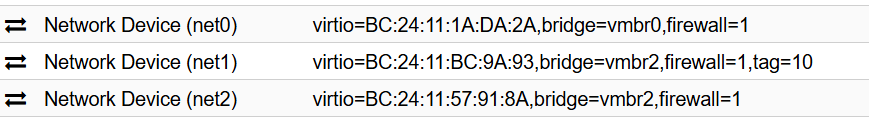
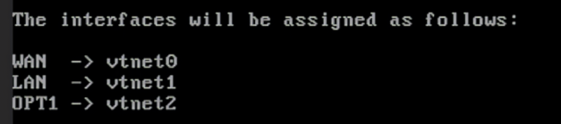
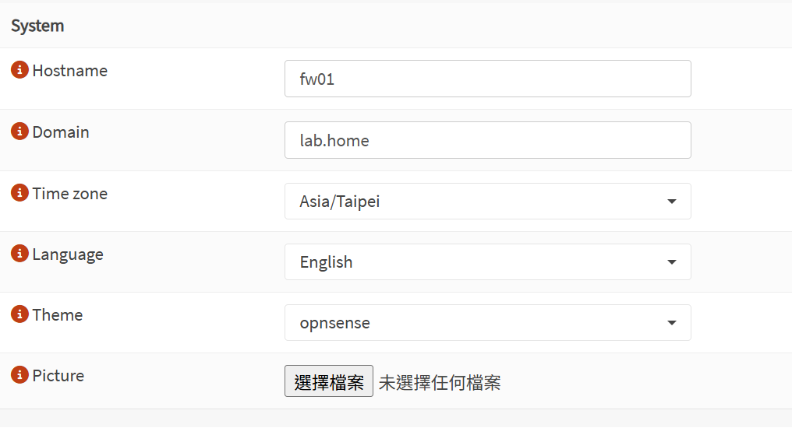
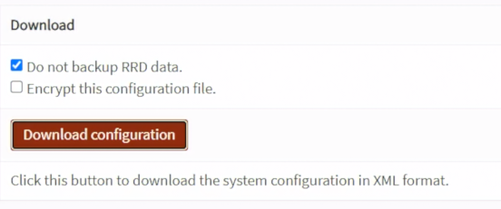
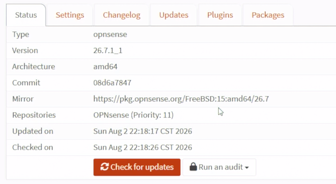
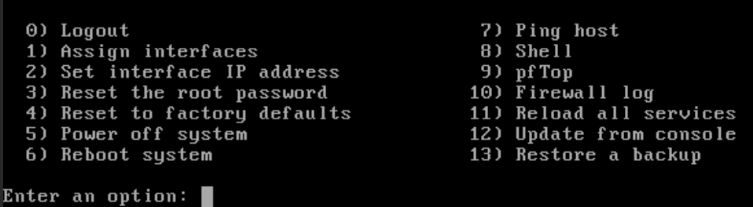
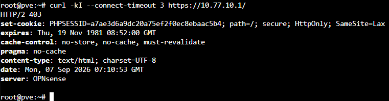

Day 11｜在 Proxmox VE 安裝 OPNsense：vNIC、WAN／LAN 介面指派與主控台（Console）救援
對應文章：Day 11｜在 Proxmox VE 安裝 OPNsense：vNIC、WAN／LAN 介面指派與主控台（Console）救援
fw01 放在 L0 pve-l0，VMID 110。本日完成安裝、三張網卡、管理介面與設定備份；VLAN 在 Day 13 建立。
Day 11 先讓 OPNsense 本身上線。pve01～pve03 此時仍使用 Day 03 建立的路由器 Bootstrap Gateway，避免在 VLAN 與規則尚未完成前失去管理路徑。等 Day 14 完成基本規則後，Day 15 才逐台把 PVE Management 與一般對外出口切到 OPNsense。
1. 下載 OPNsense DVD ISO
- 開啟 https://opnsense.org/download/。
- Architecture 選
amd64、Image type 選dvd、Mirror 選距離較近且可正常下載者。 - 下載
OPNsense-版本-dvd-amd64.iso.bz2、SHA256 與 Signature。以本次 2026 年 8 月使用的版本為例，檔名應為OPNsense-26.7-dvd-amd64.iso.bz2。 - 使用 7-Zip 解開
.bz2，得到.iso。 - 在
pve-l0→local→ISO Images→Upload上傳 ISO。 - 將下載版本、SHA256 與日期寫進部署紀錄；不要只記「最新版」。
SHA-256 與數位簽章可用來檢查下載檔案的完整性及來源真實性，本 Lab 不強制執行。若要核對 SHA-256，可在解壓前執行：
Get-FileHash .\OPNsense-26.7-dvd-amd64.iso.bz2 -Algorithm SHA256
將輸出值與 OPNsense 官方 26.7 發行頁面提供的 SHA-256 比對。
下載後必須先核對副檔名：
dvd → .iso.bz2，解壓後是 .iso，適合本文件的 PVE CD/DVD 安裝流程
vga → .img.bz2，USB／磁碟映像
serial → .img.bz2，只輸出到 Serial Console
nano → .img.bz2，預先安裝的 Embedded 映像
若拿到 .img，代表下載時沒有選到 dvd。不要把 .img 上傳成 ISO 或掛在 CD/DVD Drive；這可能只會停在黑畫面、找不到開機媒體，或因下載到 serial 映像而在一般 VGA Console 看不到輸出。.img 雖可用匯入磁碟的方式啟動，但需要額外安排安裝來源碟、目標系統碟與 Console 類型，不採用於本系列。
2. 建立 fw01 VM 110
在 pve-l0 按 Create VM：
General：VM ID 填110、Name 填fw01，勾選Start at boot。OS：選剛上傳的 OPNsense DVD ISO，Guest OS 選Other。System：Machine 選q35、BIOS 選SeaBIOS，不要新增 EFI Disk；SCSI Controller 選VirtIO SCSI single。Disks：Bus／Device 選 SCSI、Storage 選local-lvm、Disk size 填16GB，勾選Discard與IO thread。CPU：1 Socket、2 Cores、Type 選host。Memory：填3072 MiB，不啟用 Ballooning。Network：Model 選VirtIO、Bridge 選vmbr0、VLAN Tag 留白。這張網卡是 net0／WAN。- 完成精靈建立 VM。
這次實測曾使用 OVMF (UEFI) 並在 EFI Disk 啟用 Pre-Enroll keys，開機時出現：
UEFI QEMU DVD-ROM ... Access Denied
Start PXE over IPv4
這代表 Secure Boot 拒絕載入 OPNsense DVD，接著才改用 PXE。為了讓讀者直接完成安裝，本教學採用已實測成功的 SeaBIOS，不建立 EFI Disk。
建立後到 Hardware 再加入：
- net0 保持 Bridge
vmbr0、VLAN Tag 留白，作為 WAN，先由上游路由器 DHCP 取址。 - 按
Add→Network Device建立 net1。Model 選VirtIO、Bridge 選vmbr2、VLAN Tag 填10，作為 Internal Management／LAN。PVE 會處理 VLAN Tag，因此 OPNsense 內看到的vtnet1是未標記介面。 - 再按
Add→Network Device建立 net2。Model 選VirtIO、Bridge 選vmbr2、VLAN Tag 留白，作為 VLAN 20～50 Trunk。
保存三張 NIC 的 MAC Address，後面以 MAC 對照 vtnet0～2，不要只靠介面順序猜測。
建立後在 L0 Shell 確認第三張網卡：
qm config 110 | grep '^net2'

圖（一）確認 fw01 三張 VirtIO NIC 的 Bridge 與 VLAN Tag。
net2 必須顯示 bridge=vmbr2，而且不填 VLAN Tag。若顯示 bridge=vmbr0，請先關閉 fw01，把 net2 的 Bridge 改回 vmbr2 再繼續。
到 Options → Boot Order，安裝階段將 CD/DVD Drive ide2 放在系統碟 scsi0 前面。CLI 對應指令是：
qm set 110 --boot 'order=ide2;scsi0'
3. 安裝到虛擬磁碟
啟動 VM，開啟 PVE Console。
Live Environment 登入使用者輸入
installer，密碼輸入opnsense。Keymap 選預設。
本 Lab 單顆 16GB 虛擬磁碟選
Install (UFS)；它沒有磁碟冗餘，正式設備再依磁碟規劃評估 ZFS。確認選到 16GB 系統碟，接受 Partition 與 Swap 建議。
設定新的 root 密碼，不要錄到畫面中。
選
Complete Install，安裝完成後關機。到
Hardware的 CD/DVD Drive 退出 OPNsense ISO，或到Options→Boot Order將scsi0改成第一順位。若使用 CLI，執行：
qm set 110 --boot 'order=scsi0' qm start 110再次開機時確認系統從 16GB
scsi0啟動，而不是重新進入安裝程式。
4. 指派介面
從 Console 選 1) Assign interfaces：
Do you want to configure LAGGs now?輸入N。本 Lab 沒有使用 LACP／LAGG。Do you want to configure VLANs now?輸入N。本日只完成實體／虛擬介面指派，VLAN 20～50 留到 Day 13 從 Web UI 建立。- 接著依 MAC Address 指派：
WAN：vtnet0
LAN：vtnet1
OPT1：vtnet2

圖（二）依 MAC Address 將 WAN、LAN 與 OPT1 指派給 vtnet0～2。
先用 MAC Address 確認。此時不要在 Console 建 VLAN，Day 13 再從 Web UI 建立。
選 2) Set interface(s) IP address，將 LAN 設為：
IPv4：10.77.10.1/24
Gateway：不設定
IPv6：先不設定
DHCP Server：關閉
Web GUI：HTTPS
5. 從管理電腦開啟 Web UI
L0 不需要建立 vmbr3。Day 05 已在 pve-l0 → System → Network 建立 vmbr2.10，這裡先選取它並按 Edit，確認：
- VLAN raw device 是
vmbr2，VLAN Tag 是10。 - IPv4/CIDR 是
10.77.10.10/24。 - IPv4 Gateway、IPv6/CIDR 與 IPv6 Gateway 全部留空。
Autostart已勾選。
若先前略過 Day 05，才依照以上數值按 Create → Linux VLAN 補建，完成後按 Apply Configuration。
vmbr2.10 是掛在既有 vmbr2 上的 VLAN 介面，不是另一座 Bridge。先從 L0 Shell 確認：
ip -4 -br address show vmbr2.10
ping -c 3 10.77.10.1
確認可達後，管理電腦用 SSH Tunnel 經目前登入 PVE 使用的管理 IP 進入：
ssh -L 8443:10.77.10.1:443 root@192.168.0.146
不要將 IP 寫在 Read-Host 的提示文字中。若使用 $L0ManagementIP = Read-Host '192.168.0.146' 後直接按 Enter，變數會是空值，SSH 會顯示連線到空白 Host。若未來 L0 IP 改變，才使用以下寫法並在提示後實際輸入 IP：
$L0ManagementIP = Read-Host '請輸入 L0 管理 IP'
ssh -L 8443:10.77.10.1:443 "root@$L0ManagementIP"
保持 SSH 視窗開啟，在瀏覽器開啟：
https://127.0.0.1:8443
首次使用自簽憑證會出現警告。確認連線目的確實是本機 Tunnel 後再繼續，不要把忽略憑證警告當成正式環境作法。
6. 初始設定與備份
- 登入 Web UI，執行 Wizard。
- Hostname 設
fw01，Domain 設lab.home。 - DNS 暫時使用上游路由器提供值；不要在此時修改 WAN 為 PPPoE。
- Timezone 選
Asia/Taipei，NTP 保留可用來源。 - WAN 維持 DHCP，取消會阻擋實驗上游 Private Address 的選項，因為目前是 Double NAT Lab。
- 確認 LAN
10.77.10.1/24。 - 到
System → Configuration → Backups下載config.xml。

圖（三）OPNsense 初始設定的 Hostname、Domain 與 Timezone。

圖（四）下載 OPNsense config.xml 設定備份。
config.xml 可能含 Password Hash、Certificate 與 Private Key，不可提交到 Git。
7. 更新 OPNsense
先完成前一節的 config.xml 備份，再執行更新。更新過程保持 PVE Console 開啟，不要同時修改 Interface Assignment、VLAN、PPPoE 或 Firewall Rule。
先到
Interfaces→Overview，確認 WAN 已從上游路由器取得 DHCP 位址。到
System→Firmware→Settings，確認 Release Type 是Community，不要切換成Development。Firmware Mirror 先保留預設；若下載速度過慢或連線失敗，再改選可正常連線的 East Asia Mirror。
回到
System→Firmware→Status。按
Check for updates。有更新時先閱讀 Changelog，再按下安裝更新的按鈕。
等待套件下載與安裝完成。若畫面提示需要 Reboot，允許重新啟動；更新期間 SSH Tunnel 與 Web UI 暫時中斷是正常現象。
OPNsense 重新開機完成後，再次建立 SSH Tunnel：
ssh -L 8443:10.77.10.1:443 root@192.168.0.146重新開啟
https://127.0.0.1:8443，到Lobby→Dashboard記錄更新後版本。再到
System→Firmware→Status執行一次Check for updates，確認沒有尚未完成的更新。更新成功後重新下載一份
config.xml，檔名標註更新後版本與日期，仍不可提交到 Git。

圖（五）確認 OPNsense Firmware 版本與更新狀態。
本次使用 26.7 安裝 ISO，更新後的小版本以實際結果為準，不預設固定版號。若 Check for updates 失敗，先確認 WAN、DNS、Default Gateway 與 Firmware Mirror，不要直接改用 Development Repository。
官方更新說明：https://docs.opnsense.org/manual/updates.html
8. Console 救援演練
保持 PVE Console 開啟，記錄以下選項：
1) Assign interfaces
2) Set interface(s) IP address
3) Reset the root password
4) Reset to factory defaults
11) Reload all services
13) Restore a backup

圖（六）OPNsense 主控台的介面指派、服務重新載入與 Shell 救援選單。
本日保留現有設定，選擇 11) Reload all services 重新載入服務。完成後回到 L0 再次確認 HTTPS：
curl -kI --connect-timeout 3 https://10.77.10.1/

圖（七）重新載入服務後，從 pve-l0 再次取得 OPNsense HTTPS 回應。